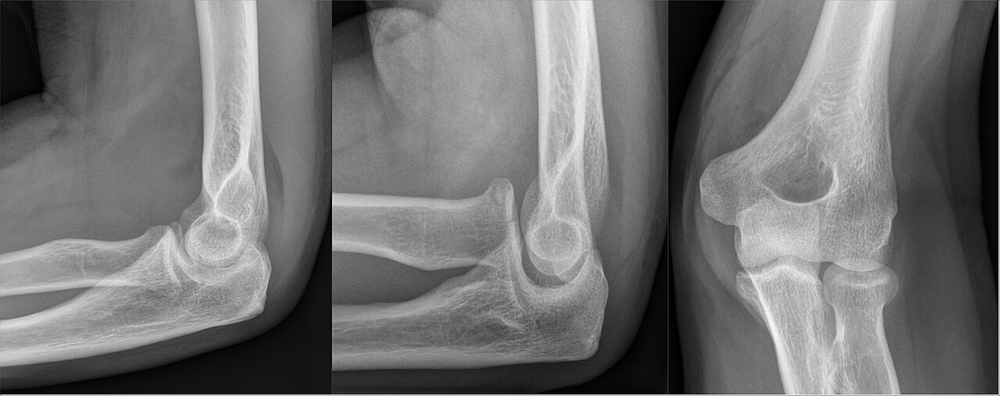

Ficha del catálogo
Fractura de la cabeza radial y almohadillas grasas del codo
- Sistema
- Óseo
- Modalidad
- RX
- Región
- Codo
- Dificultad
- Intermedio
La fractura de la cabeza o del cuello del radio es la lesión ósea más frecuente del codo del adulto y se produce por una caída sobre la mano extendida. Muchos trazos son verticales y sin desplazamiento, casi invisibles en la proyección frontal. El diagnóstico se apoya con frecuencia en un signo indirecto, el desplazamiento de las almohadillas grasas del codo por el derrame articular. Reconocer ese signo evita altas prematuras en pacientes con dolor y limitación de la pronosupinación.
Técnica
Anteroposterior y lateral estricta del codo con flexión de 90 grados, complementadas con una proyección oblicua dirigida a la cabeza radial. La lateral solo es válida cuando el húmero distal muestra la imagen superpuesta de sus cóndilos.
Qué observar
- Almohadilla grasa posterior visible, hallazgo siempre patológico
- Almohadilla grasa anterior elevada en forma de vela desplegada
- Escalón o angulación en el contorno de la cabeza radial
- Trazo vertical que alcanza la superficie articular proximal del radio
- Línea radiocapitelar conservada, que descarta luxación asociada
- Fragmentos intraarticulares que puedan bloquear la movilidad
Hallazgos
Derrame articular con desplazamiento de las almohadillas grasas y trazo sutil, con frecuencia vertical, en la cabeza o el cuello del radio.
Perlas
En el adulto con traumatismo de codo y almohadilla grasa posterior visible sin fractura evidente hay que asumir una fractura oculta de la cabeza radial y tratarla como tal. En el niño la misma imagen orienta a fractura supracondílea no desplazada.
Diagnóstico diferencial
- Fractura del olécranon
- El trazo asienta en el cúbito proximal y suele estar desplazado por el tríceps.
- Luxación del codo
- Hay pérdida completa de la congruencia humerocubital.
- Sinovitis o artritis con derrame
- Almohadillas desplazadas sin antecedente traumático y con clínica subaguda.
Simuladores
- Tuberosidad bicipital vista de perfil
- Cresta fisaria residual del cuello radial
- Grasa periarticular normal en proyecciones oblicuas
Por modalidad
- RX
- Diagnóstico inicial apoyado en signos indirectos
- TC
- Confirma trazos ocultos y define fragmentos desplazados
- RM
- Muestra edema óseo y lesiones ligamentarias asociadas
Protocolo
Anteroposterior, lateral estricta y proyección oblicua de cabeza radial. Tomografía si hay bloqueo mecánico o si se plantea cirugía.
Clasificación
Se agrupan en fracturas sin desplazamiento, con desplazamiento parcial de un fragmento y conminutas de toda la cabeza, con indicación quirúrgica creciente.
Errores frecuentes
- Interpretar una almohadilla posterior visible como hallazgo sin importancia
- Aceptar una lateral rotada como válida para valorar la grasa periarticular
- No repetir el estudio a los diez días cuando persiste el dolor

codo cabeza radial almohadilla grasa derrame articular fractura oculta signo de la vela trauma